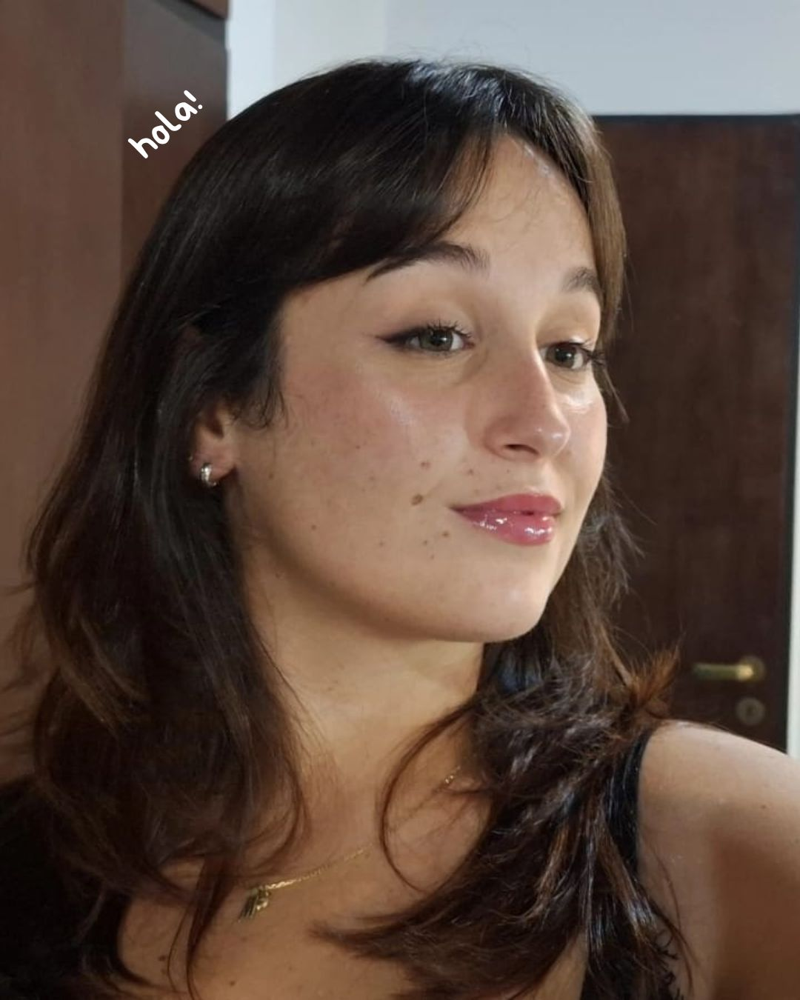

Infromación variada

El 10 de octubre del 2001 mi papá cumplió uno de sus objetivos: tener una hija y ponerle Marina, ¿por qué? Porque es un fanático del Mar y todo lo que tenga que ver con él, con la mala suerte que su hija no puede soportar ni tener cerca el olor a pescado (perdón pa).
Tengo 24 años, estudio Diseño Multimedial y este es mi último año de la carrera (espero). Desde chica supe que iba a terminar estudiando algo relacionado al arte, pero creo que jamás se me hubiera ocurrido Diseño Multimedial, todo gracias a una charla que vino a dar un estudiante a la escuela y nombró algo que me cerró por todos lados. Me estaba por anotar en arquitectura, que no me convencía del todo, pero me gustaba hacer casitas en los sims.